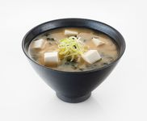

Miso soup recipe

Description d'une bonne soupe miso
La soupe Miso est un plat du pauvre, du prolétaire qui a besoin de reprendre des forces après une dur journée de labeur.
Elle contient donc du gras, du salé, de la viande ou du poisson et accompagnera parfaitement du riz blanc
Liste d'ingrédients
- 500ml d'eau du robinet non traité
- Deux doses de Dashi aux champignons
- Deux carottes coupées en batonnets de 0.5*0.5cm par 4.5cm de long
- Une tête de broccoli et son pied coupé en batonnets
- De la sauce soja, une lichette suffit
- Un bloc de tofu japonais de 200gm
- une poignée de Wakame
- 70gm de Miso
- 2 oignons nouveaux
Préparation
- Faire bouillir l'eau avec le Dashi
- une fois l'eau bouillante, ajouter les carottes et le pied de broccoli préalablement coupés. Minuter 6.30 minutes
- pendant ce temps, faire revenir la poêle le tofu coupé en lamelle afin d'en dorer les côtés
- Ajouter la tête de broccoli et minuter 7 minutes
- Prendre un peu de bouillon et délayer dedans le miso et la sauce soja
- En fin de cuisson, ajouter le miso, les wakame et les oignons nouveaux ciselés.
- Servir accompagné d'un bol de riz
Bon appétit !